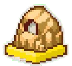

Alors que la Terre venait de se remettre de l'attaque de Raditz, Goku perdit la vie pour protéger Gohan, apprenant de la bouche du frère de Goku que les autres Saiyans viendront dans un an pour attaquer, Piccolo prit Gohan pour s'entraîner, après 6 mois d'entraînements intensifs, Piccolo teste les capacités de Gohan dans un combat singulier. Piccolo a su voir les progrès de Gohan suite à ce combat.
Débloque l'attaque combineée avec Gohan "Tir maléfique".


Lors de l'affrontement avec Vegeta, Piccolo perdit la vie pour protéger Gohan, mais en arrivant sur Namek, Gohan et Krilin ont pu ramener Piccolo sur Namek, sa planète, d'origine, sur place il trouva Nail, un Namek combattant qui étaiit aux portes de la mort, il décida de fusionner avec ce dernier pour pouvoir affronter Freezer. A la fin du combat, Goku arrive.


Grâce à Goku, Freezer fut vaincu, mais il revint sur Terre, avec un corps mécanique prêt à attaquer la Terre. Cependant un jeune homme venant du futur nommé Trunks annonce le danger que constituera les cyborgs à l'avenir, 3 ans plus tard les gueriers sont prêts, ils ne trouvent pas les cyborgs, mais tombe sur le Dr Gero, accompagné de Gohan, ils comptent l'affronter. Au final de ce combat, Piccolo se rend compte qu'il n'est pas à la hauteur, il doit devenir plus fort.


Ne se trouvant pas à la hauteur au niveau de sa puissance par rapport au cyborg, il décida à contre coeur d'aller Kami, pour lui demander de ne refaire qu'un, le Super Namek, l'originel, la fusion du Dieu et du Démon. Il alla le voir mais Kami voyant tout depuis son palais, accepte la proposition à la seule condition que Piccolo soit digne pour pouvoir assurer la victoire face aux cyborgs, alors il s'en suit un combat entre le dieu et le démon afin de jauger les capacités de Piccolo. A la fin les deux fusionnent et deviennent le Namek sans nom et complet.
Débloque l'Attaque Ultime "Shinmafukumetsu"
Après qu'il ait fusionné avec le Tout-Puissant, il se dirige vers le lieu de l'affrontement, mais alors que les cyborgs mettent à mal la Z-Team dont même Vegeta, une ombre mystérieuse et sournoise apparait devant Piccolo,il s'agit de Cell la forme de vie ultime crée par l'ordinateur du Docteur Gero, qui provient d'un futur plus lointain que celui de Trunks, il aa= voyagé jusqu'ici pour pouvoir absorbé les cyborgs C17 et C18 afin de devenir parfait. Après avoir affronté Cell et lui avoir dérobé les informations qu'il avait, Piccolo décida de prévenir tout le monde et prit par la peur car pas assez puissant pour gérer les autres guerriers Z, il prend la fuite.


Etant à la recherche de Cell, il essaya de fouiller dans les moindres recoins, mais rien, soudainement il tomba sur les cyborgs dont C18 qui était à la recherche de Goku, sauf que Piccolo refuse de parler, alors un combat s'engagea entre le Namek et les cyborgs. Alors qu'il est en plein affrontement, personne ne sentit Cell venir mis à part C16 et se dernier absorba C17.

Piccolo a fait en sorte que les cyborgs s'échappe de Cell, C18 fut vaincu et Cell ne put devenir parfait, c'est alors que Cell eut l'idée de faire revivre C18 avec les boules de cristal. Il rencontra Vegeta qui était avec son vaisseau et lui proposa de partir sur Namek avec lui, pour faire revenir C18, l'absorber et combattre sa forme parfait, ce que Vegeta accepta, c'est comme ça que Cell partit en direction de Namek. Piccolo voyant la bétise de Vegeta fut en colère c'est alors qu'un réglement de compte entre le Namek et le Saiyan a lieu. Malgré que Vegeta prit la fuite, ça n'empecha pas Piccolo d'attaquer son vaisseau.

Battre C-18 sans la mettre KO, à la fin du chrono .
Piccolo part avec Gohan et Dendé sur Namek. Du côté de Vegeta, il arrive également sur Namek, à ce moment là une nouvelle menace apparaît C'était Cooler et ses hommes qui savent que d'autres personnes sont sur Namek pour chercher les boules de cristal, au moment où Doore allait éxecuter un namek pour ne pas avoir dit la position d'une dragon ball, Piccolo intervient, accompagné de Gohan pour barrer la route à Cooler. Alors que le combat semblait serrer, Piccolo ordonna à Gohan de se transformer en Super Saiyan 2 et de lancer une attaque combinée le Masenkossapo, pendant le combat une obre s'approche de Dendé, c'était Cell qui prit en otage le petit Namek et demande en échange des boules de cristal contre la libération de Dendé, ce que Piccolo accepta
Débloque l'Attaque combinée "Masenkossappo" avec Gohan Super Saiyan 2.

Terminer le combat contre Vegeta .


Etant en quête des Dragon Balls, Cooler et Cell parviennent à un accord ensemble, même si dans le fond chacun d'entre eux compte trahir l'autre au moment opportun. Du côté de Vegeta il est arrivé et n'accepte pas le plan de Piccolo pour vaincre les deux adversaires, qui est de se mettre à plusieurs sur eux. Même si Vegeta ne sera pas d'une grande aude, Piccolo n'hésite pas à attaquer le vaisseau de Cooler. A la fin les sbires de Cooler sont défaits grâce à Gohan, mais Cell a rassemblé les boules de cristal, pire encore les Namek lui ont appris à invoquer Porunga, il formula son voeu qui est de ramener à la vie C18 et l'absorba, dés lors il était devenu parfait. Vegeta sentant l'énergie phénoménale de Cell, il tenta de le défier.

Terminer le combat contre Cooler
Devenu trop fort sous sa forme parfaite, Cell ne craignait plus rien, alors qu'il allait anéantir Vegeta, il se fit sauver de justesse par Piccolo. Ne pouvant rien faire face à au cyborg ultime, les deux rivaux décident de s'allier pour vaincre Cell, le tout accompagné de Gohan. Après une attaque combinée de deux guerriers, Cell fut vaincu et la paix fut ramenée sur Namek
Débloque l'attaque combinée avec Vegeta "Tir d'outsider".

Terminer le combat contre Cooler.

Après le Cell Games et la défaite de Cell, le monde fut en paix durant 7 ans mais plus pour très longtemps, deux nouvelles menaces firent leur apparition, Babidi le sorcier et Majin Boo, tous deux faisaient trembler le monde et rien ne semblait les arrêter, Vegeta et Goku étaient dans l'Autre Monde, Vegeta suite à son sacrifice, Goku suite au Cell Games et Gohan est introuvable. Il ne restait que les petits Goten et Trunks pour défendre la Terre, ces deux là apprirent la fusion et s'entraînaient pour battre Boo, le Majin était devenu entièrement mauvais se dirige vers le palais, prêt à tout détruire, mais les deux petits fusionnèrent et cela donna Gotenks qui après un dur entraînement pouvait passer en Super Saiyan 3, Gotenks et Piccolo allaient maintenant faire un combat seré contre Boo, le sort de la Terre était entre leurs mains. A la fin du combat la fusion des enfants se dissipa, alors que le combat semblait perdu, Gohan intervient face au démon. La suite de ce combat sera le début d'une autre histoire ...
Débloque l’attaque combinée avec Vegeta (Super Saiyan) nommée "Super épée Bagit".
Terminer le combat contre C-18.